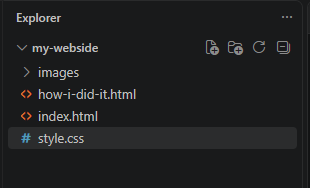
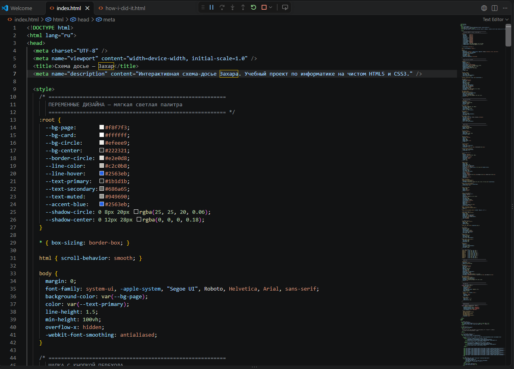
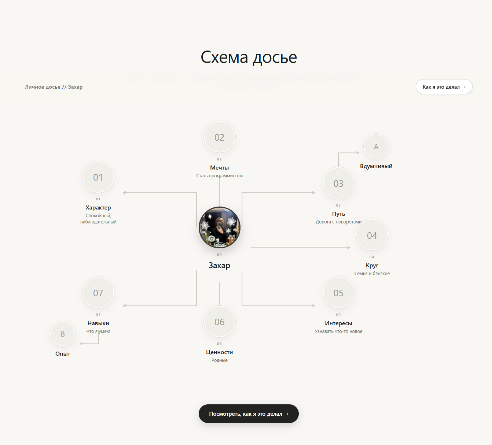
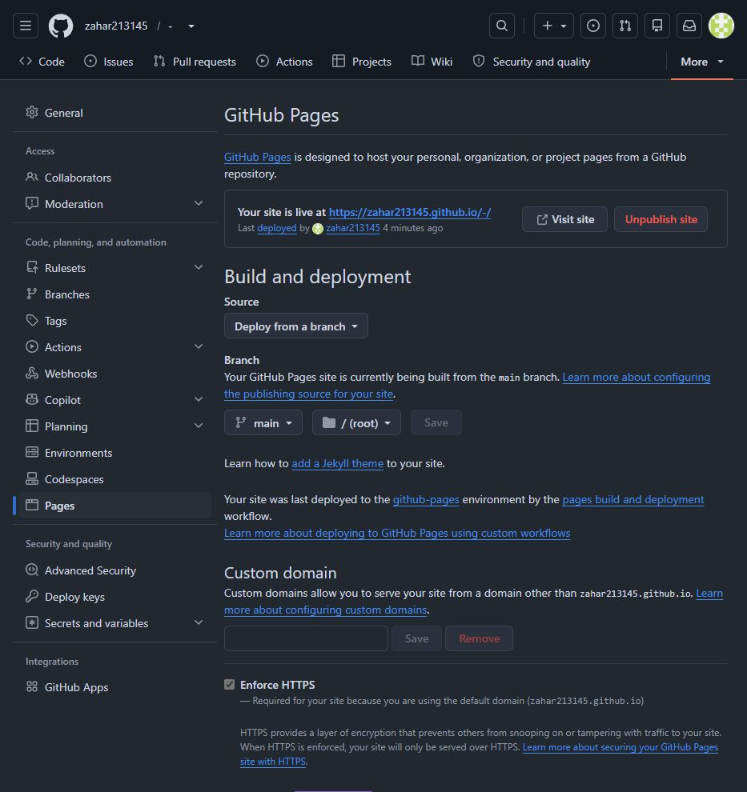

Как я собирал своё досье
Этот сайт — учебный проект по информатике. Ниже — четыре шага, которые превратили пустую папку на рабочем столе в полноценный сайт со схемой досье. Красивый и удобный сайт можно сделать на чистом HTML5 и CSS3, без лишних фреймворков.
Подготовка и создание файлов
Создал папку проекта my-webside и настроил структуру из двух страниц.
- Создал структуру файлов в VS Code
- Подобрал палитру в светлых спокойных тонах
- Спланировал ключевые блоки досье

Написание HTML-разметки
Разметил главную страницу с помощью семантических тегов и добавил SVG-слой со стрелками.
- Семантические блоки тегов
- Векторные линии-стрелки
- Связь главной страницы с отчётом

Стилизация через CSS
Настроил дизайн-токены через :root, позиционирование кругов схемы и плавные анимации.
- Переменные цветов и отступов
- Адаптивная верстка для телефонов
- Подсветка стрелок при наведении

Размещение на GitHub Pages
Создал репозиторий на GitHub и опубликовал проект в сети Интернет.
- Инициализация Git и отправка кода
- Включение GitHub Pages
- Проверка работоспособности ссылки

Добавьте скриншот shot-4.png в папку images';" />Что реализовано в проекте
Ключевые технологии, применённые при создании интерактивного досье:
1. SVG-стрелки
Направление стрелок и ортогональные изгибы выполнены на векторном SVG-слое.
2. Загрузка фото
Возможность загрузить собственное изображение в любой кружок кликом мыши или клавиатурой.
3. Плавный интерфейс
Интерактивная подсветка связей и мягкая анимация появления блоков.